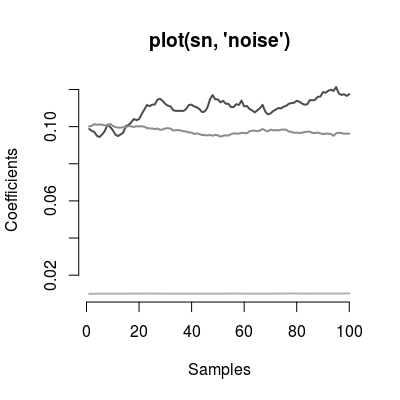

Class SensorNoiseModel.
Description
Class SensorNoiseModel simulates a degradation in
the performance of an individual sensor by generating
noise in the sensitivity coefficients. This class is a
super-class of the class Sensor.
Details
Slots of the class:
num |
Sensor
number (1:17), which noise profile is used. The
default value is 1. |
gases |
Gas indices. |
ngases |
The number of gases. |
gnames |
Names of gases. |
concUnits
|
Concentration units external to the model. |
concUnitsInt |
Concentration units internal for the model, values used to evaluate the statistics on coefficients. |
ssd |
Parameter of standard deviation used to generate the noise. The deault value is 0.1. |
sntype |
Noise type
(randomWalk). |
snf |
Scaling factor
for the amplitude to generate the noise. The default
value is c(1, 1, 0.2). |
sndata |
The
reference data of standard deviation values from UNIMAN
dataset (see UNIMANsnoise). |
Methods of the class:
predict |
Generates noise vectors of a given length. |
ssd
|
Gets the noise level. |
ssd<- |
Sets the noise level. |
ncoef |
Gets the number of coefficients. |
The plot method has three types (parameter
y):
barplot |
(default)
Shows distribution of sd values stored in slot
sndata. |
noise |
Depicts the noise vectors generated by the model. |
walk |
Shows the random walk on a scatterplot for two given coefficients. |
Examples
# model: default initialization sn <- SensorNoiseModel() # get information about the model show(sn)Sensor Noise Model (ssd 0.1), noise type 'randomWalk'print(sn)Sensor Noise Model - num 1 - 3 gases A, B, C - ssd: 0.1 - noise type: randomWalk - noise-factor: 1, 1, 1plot(sn)
# model: custom parameters # - many sensors sn <- SensorNoiseModel(ssd=0.5, num=1:17, gases=c(1, 2, 3)) print(sn)Sensor Noise Model - num 1, 2, 3 ... 17 - 3 gases A, B, C - ssd: 0.5 - noise type: randomWalk - noise-factor: 1, 1, 1plot(sn)
# method plot # - plot types 'y': barplot, noise, walk sn <- SensorNoiseModel() # default model plot(sn, "barplot", main="plot(sn, 'barplot')") # default plot type, i.e. 'plot(sn)' does the same plotting
plot(sn, "noise", main="plot(sn, 'noise')")
set.seed(6) # make results reproducible plot(sn, "walk", n=100, k=5, main="plot(sn, 'walk', n=100, k=5)")